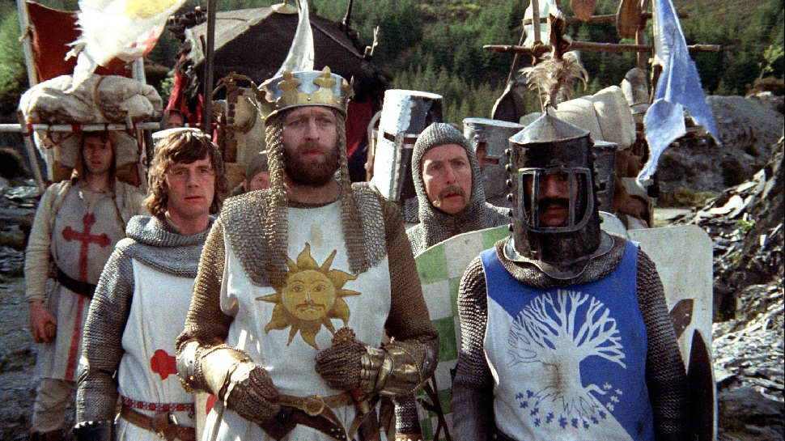

Monty Python and the Holy Grail
GBR 1975 (86 minutter)
Laget av
cast:
Genre: komedie, eventyr
Summary
Kong Arthur og hans riddere skal finne Den Hellige Gral. Dessverre har det vært store nedskjæringer i kongeriket, hestene har blitt satt bort og derfor må ridderne nøye seg med å late som om de rir til lyden av sammentapede kokosnøtter. På vei til Den Hellige Gral møter ridderne den uforskammede franskmannen, ”Ni”-ridderne, det sorte ”Arrgh”-beistet og den modige sorte ridderen som forsetter å kjempe, selv om han bare har hodet igjen. Med forbedret lyd- og bildekvalitet er denne udødelige og legendariske Monty Python-klassikeren mer severdig enn noen sinne. Sinnssyke og absurde sketsjer avløser hverandre konstant i dette rablende, vanvittige, ridderlige epos, som gjorde Monty Python til nummer en på verdens humorhitliste. 27 år gammel er filmen, men den er udødelig. Se den, se den igjen, men pass på at du ikke selv dør av latter!